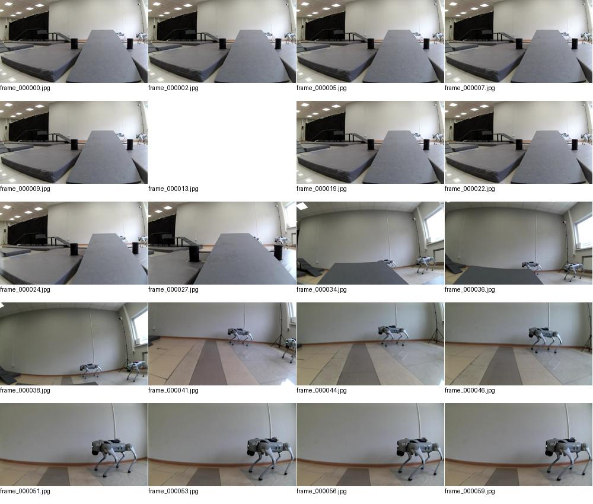
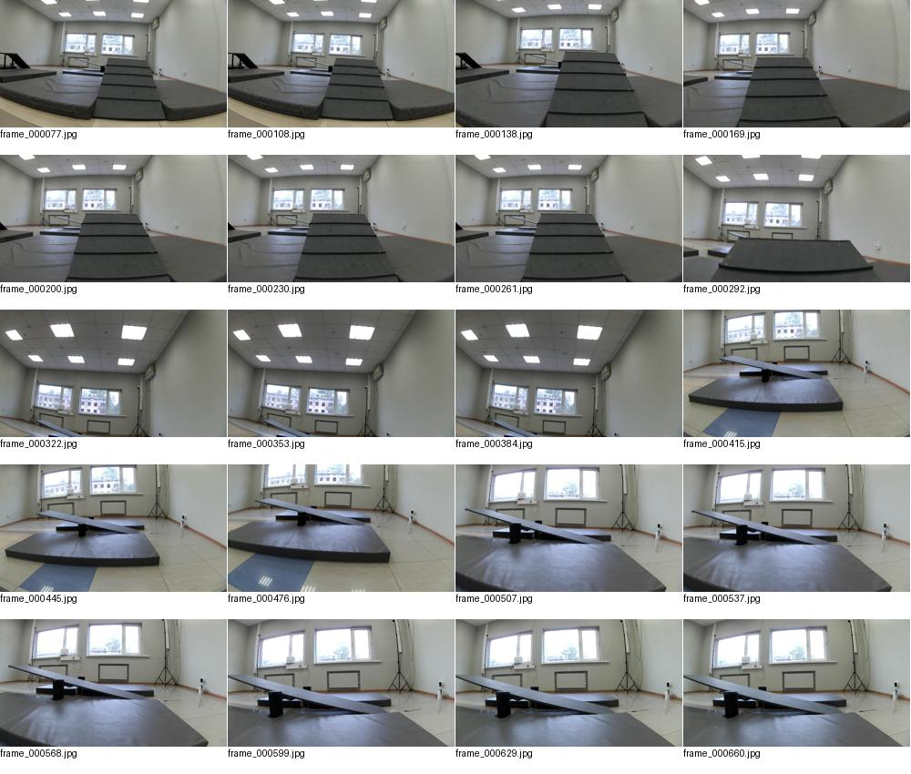
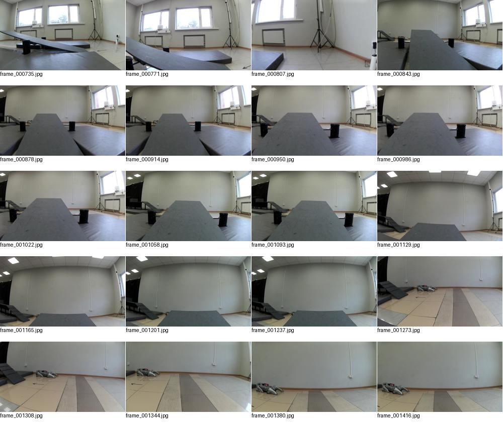
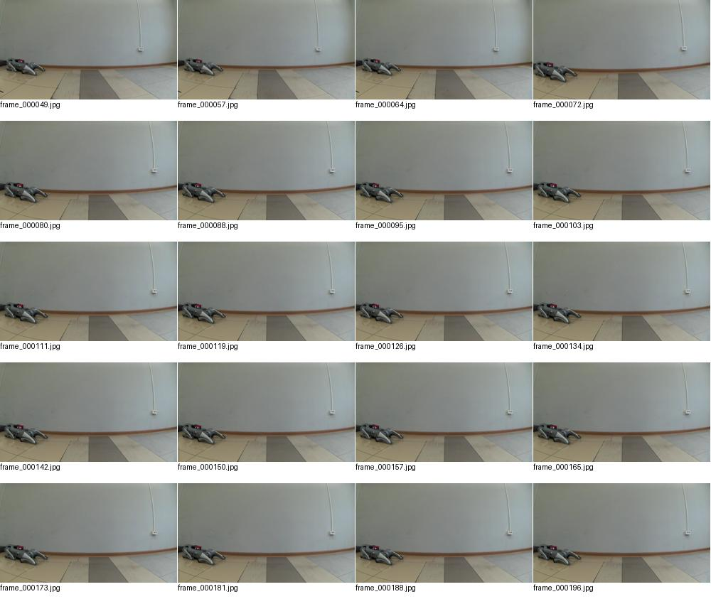
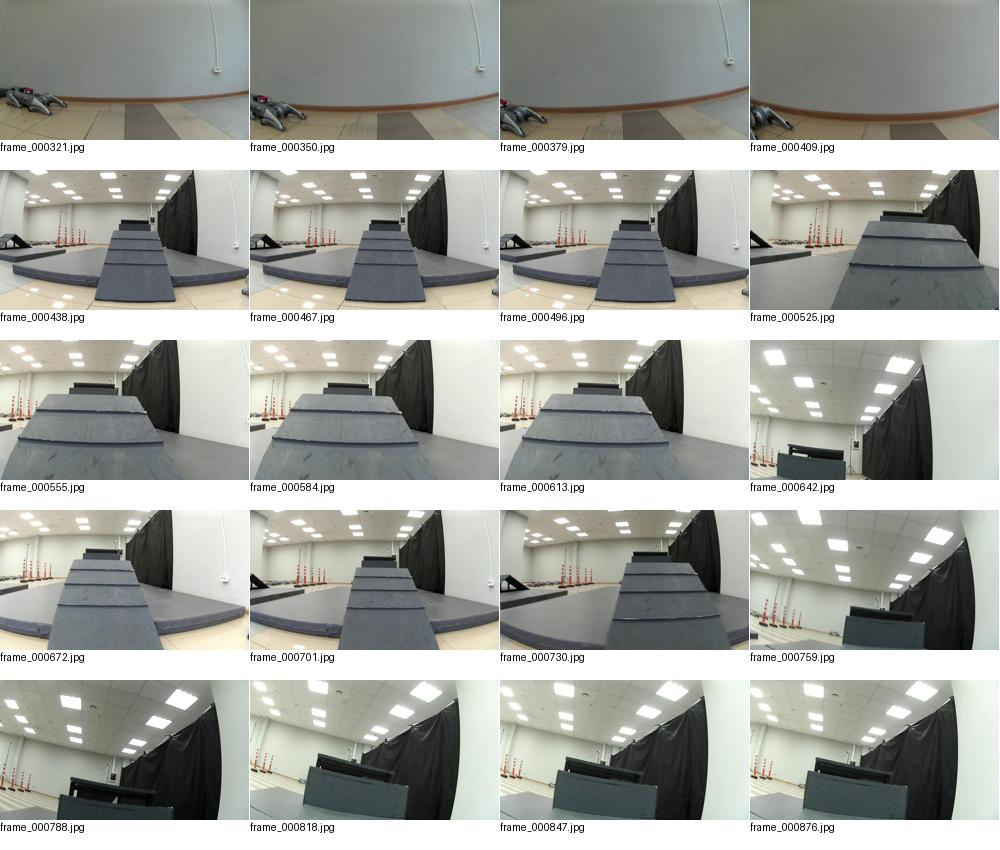
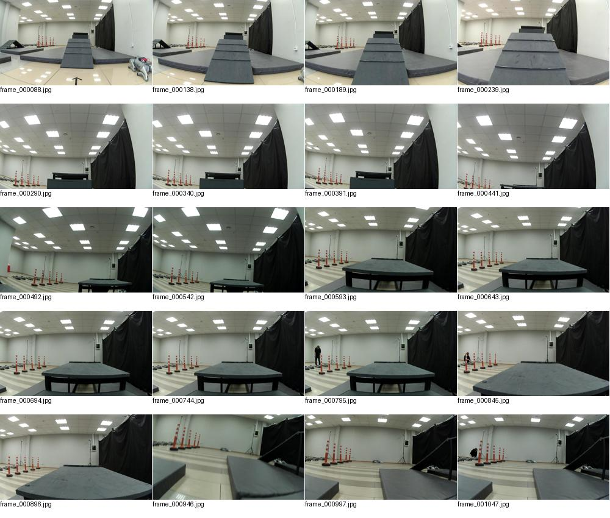
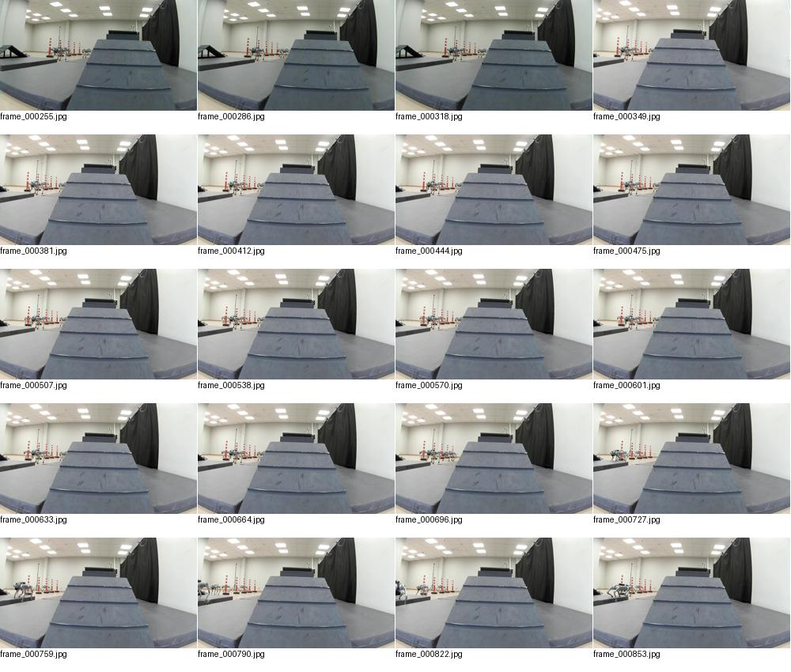
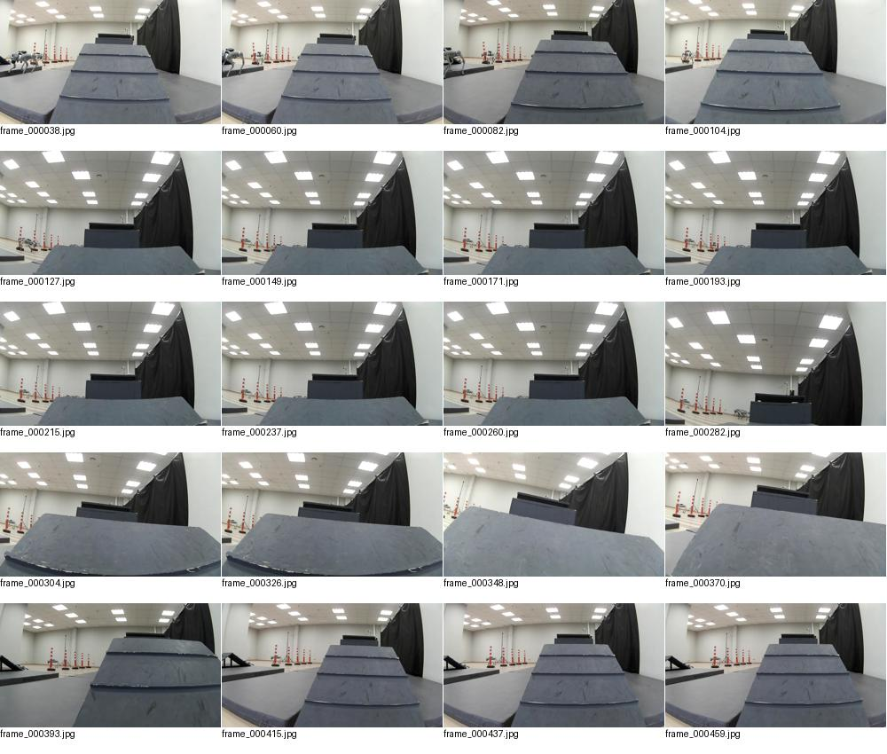
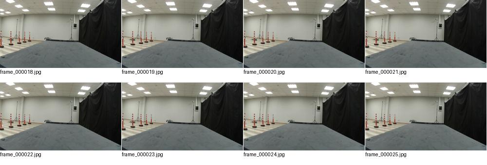
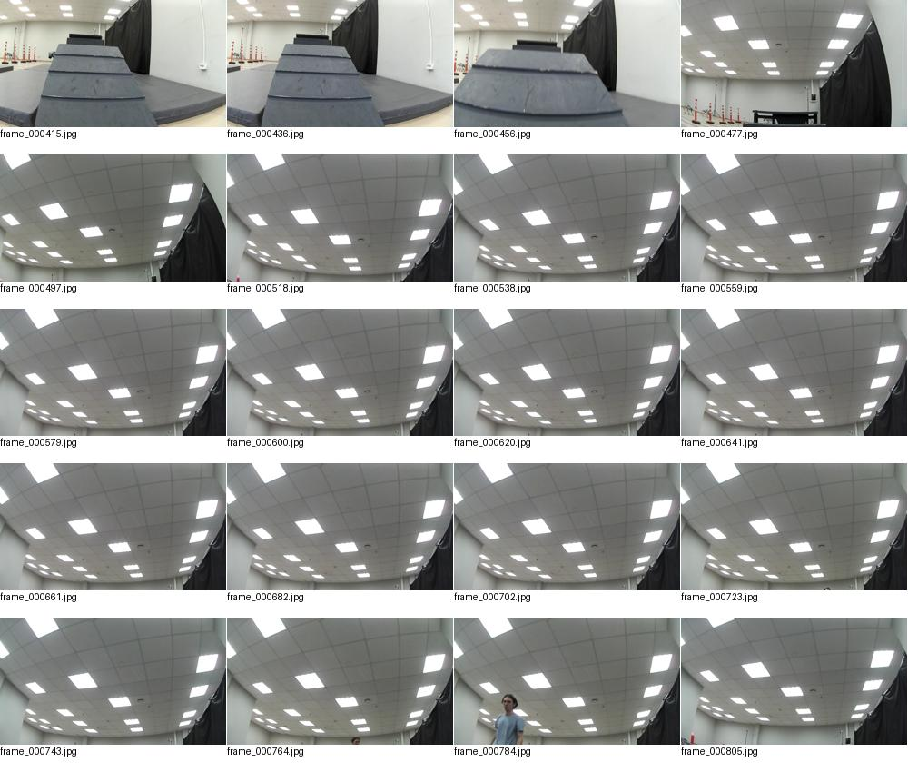

Аудит локальных записей · 23 сентября 2026. Время в именах сеансов — UTC; Москва +3 часа.
Материал для разработки есть. На последовательностях кадров от 22 сентября видны проход короткой горки и проход качающегося мостика до пола за ним. Это визуальное подтверждение ручных проходов, не официальный зачёт. Для длинного препятствия «рампа → платформы/ступени → спуск» полного прохода в проверенных записях не найдено. Есть подъём по входной рампе, приближение к верхним платформам и неудачные попытки.
Включая папку «старое»: 8 сеансов, 7 820 файлов, 417,04 МБ (десятичные), 4 394 JPEG. Есть 6 итоговых summary.json и 8 завершённых записей run_* в этих сеансах. Все найденные JSONL разобраны без ошибок. Все JPEG полностью декодированы: один повреждённый файл — старое/20260918T100148.952333Z/camera/frame_000013.jpg. Все кадры, перечисленные в имеющихся camera.jsonl, присутствуют. Это не проверка полноты по удалённому оригиналу: Pi после окончания слота не опрашивался.
| Сеанс | JPEG | МБ | Состояние на ПК |
|---|---|---|---|
| 20260923T101839.533708Z | 8 | 0.89 | Неполная локальная копия |
| 20260923T102044.157923Z | 391 | 37.91 | Есть итог |
| старое\20260918T100148.952333Z | 44 | 2.77 | Неполная локальная копия |
| старое\20260922T120404.342807Z | 1266 | 117.32 | Есть итог |
| старое\20260922T121011.673476Z | 704 | 61.14 | Есть итог |
| старое\20260922T122517.056431Z | 960 | 98.33 | Есть итог |
| старое\20260923T093007.722631Z | 599 | 58.79 | Есть итог |
| старое\20260923T094244.932203Z | 422 | 39.90 | Есть итог |
Сеанс 101839 содержит лишь 8 изображений и не имеет локального summary.json/завершения run_001. Сеанс 18 сентября — фрагмент из 44 JPEG. Их нужно докачать при следующем доступе; по локальной папке нельзя заключать, что удалённые записи потеряны.
Проверены ссылки на 3339 файлов карт в журналах maps.jsonl: отсутствующих файлов — 0. Геометрия всех воксельных карт в этом аудите не реконструировалась; точные высоты ступеней и положения лап из него не установлены.
Сеанс длился 172,3 с. Запись run_001 включена на 89,94 с, выключена на 172,30 с: около 82,4 с. Сохранились 391 кадр и, по summary, 315 карт. Профиль на старте записи — floor (заданная скорость вперёд 0,30 м/с); заданная скорость не равна фактической.
Во всём сеансе — 59 событий «Просроченная команда», 2 потери heartbeat, 4 остановки «Нет свежего подтверждения от Raspberry Pi» и 2 остановки по наклону. Это события, не 59 независимых обрывов сети. Есть признаки задержек управления; по этим логам нельзя разделить вклад VPN, Wi-Fi, очередей и блокировок программы. Нельзя приписать падение только скорости или только остановке: нужны синхронные кадры сбоку и временная диаграмма команд.
В сохранённом run_001 средняя частота кадров около 4,8 Гц, максимальный промежуток 0,271 с. Кадры на Pi продолжали сохраняться. Проблему окна/доставки предпросмотра нужно отделять от записи камеры.
В последних двух сеансах нет входных Q/E и нет команд с боковой скоростью. Ранее, 22 сентября, журнал содержал и Q/E, и Move с ненулевым y: 36 команд в 120404 и 24 в 121011. Значит, боковая составляющая в системе предусмотрена; эти записи не доказывают её работоспособность в последнем слоте.
Локальная проверка цепочки физическая клавиша → окно → heartbeat → боковая скорость проходит для английской и русской раскладок. Возможны фокус в поле подписи, блокировка после остановки, старая запущенная версия или проблема доставки. Точную причину пока не установили. Не объявляем Q/E исправленными без испытания.
Добавлен профиль «Рампа 0,25»: вперёд/назад 0,25 м/с, вбок 0,10 м/с, поворот 0,25 рад/с. Обновлены локальные клиент и remote_teleop.py. На Pi новая версия пока не загружена — слот завершён. Перед выбором профиля нужно обновить сервер. 35 локальных проверок прошли; физического испытания не было.
0,25 м/с — кандидат для сравнения, а не гарантированно подходящая скорость. Сначала добиваемся непрерывного управления. Снижение с 0,30 до 0,25 само по себе не исправит неверный угол входа, зацеп ступени или обрывы команд. Предельные наклоны нельзя просто удалить, чтобы робот продолжал идти при потере устойчивости.
| Минуты | Ты — тестировщик | Я — разработчик |
|---|---|---|
| 0–5 | VPN, актуальный IP, робот на полу, оператор готов. | Проверка устройства/версий, загрузка обновлений, начало диагностики. |
| 5–12 | Запись теста на полу: отдельно W/S, A/D, Q/E. Между нажатиями полностью отпускаешь клавиши. Меняешь профили без движения. | Сравниваю принятые клавиши, команды и отклик. При повторных обрывах остаёмся на диагностике, не идём на рампу. |
| 12–20 | Один-два прохода короткой горки из одинакового положения; запись до входа и до выхода на пол. | Проверяю непрерывность команд, геометрию и воспроизводимость. |
| 20–35 | Если связь стабильна: длинная рампа на 0,25. Одна запись на одну попытку. По возможности организатор снимает лапы и вторую ступень сбоку. После неудачи — возврат в одинаковый старт. | Сопоставляю наклон, скорость, остановки и видео. Меняем за раз только один параметр; после повторного падения не продолжаем вслепую. |
| 35–42 | Повтор успешного варианта; автономный короткий тест только если версия подготовлена и предыдущие проверки пройдены. | Проверяю повторяемость. Приоритет — сохранить надёжный результат, а не обязательно включить автономность в этом слоте. |
| 42–50 | Конец записи, скачать завершённые сеансы, дождаться подтверждения. | Проверка файлов и итогов. Докачка прежних неполных сеансов по оставшемуся времени. |
Выравниваешь робота на полу перед входом → выбираешь профиль и проверяешь «Профиль Pi» → «Начало записи» → отметка «длинная рампа, попытка 1, 0.25» → 2 секунды стоянки → проход. После выхода на пол или остановки попытки отпускаешь клавиши, ждёшь 2 секунды и нажимаешь «Конец записи». При падении сначала остановка; не пытаться компенсировать её сменой скорости. Запиши словами: где остановился, был ли срыв лапы, какой край ступени задел. Для новой попытки — новая запись.
Сначала повторяемый проход одного препятствия без ручных поправок и без просроченных команд во время движения. Затем три успешных повтора, затем небольшое изменение стартового смещения, затем объединение препятствий и только потом увеличение скорости. Это испытательный критерий команды, не обещание победы. После слота я сравниваю попытки и выпускаю одну проверенную версию для следующего доступа.
Это равномерная выборка кадров для обзора; выводы дополнены анализом всех журналов и IMU. Номер кадра не равен времени в секундах.









